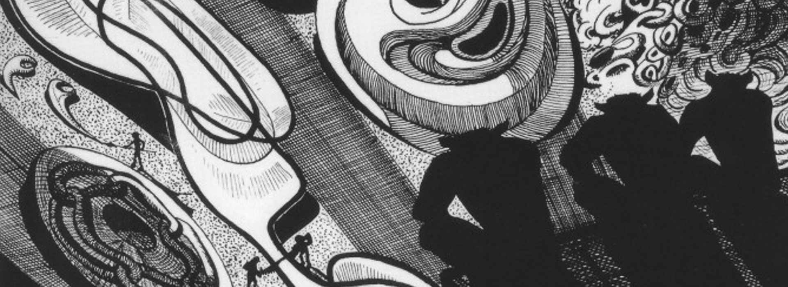

dpl0a's webpage

Hi! I'm Daniele, a
wannabe category theorist
from Italy. Here's my CV.
You can also find me on:
Github
arXiv
ORCiD
Twitter
My email address is
[name]++[surname]++[@protonmail.com]
.
Papers
Nets with Mana: A Framework for Chemical Reaction Modelling
w/ Fabrizio Romano Genovese & Fosco Loregian —
arXiv:2101.06234
Misc
I volunteer as a webmaster for
Progetto ItaCa
's website.